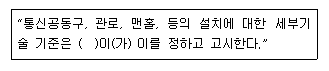
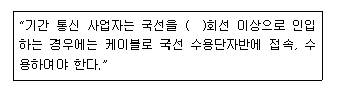
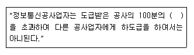
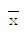
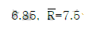

통신설비기능장 (2009-08-27 기출문제)
1과목: 임의 과목 구분(20문항)
1. 다음 중 마이크로파 송신기의 전력 측정용으로 가장 적합한 것은?
- Q미터
- 오실로 스코프
- 볼로미터 소자
- 스펙트럼 분석기
(정답률: 71%)

2. 다음 ( )안에 들어갈 내용으로 가장 적합한 것은?

- 지방체신청장
- 전파연구소장
- 방송통신위원회
- 지식경제부장관
(정답률: 81%)
3. 다음 ( )안에 들어갈 내용으로 가장 적합한 것은?

- 2회선
- 3회선
- 5회선
- 10회선
(정답률: 67%)
4. 다음 중 분포정수회로의 2차 정수가 아닌 것은?
- 감쇠정수
- 위상정수
- 누설콘덕턴스(G)
- 특성임피던스(Z0)
(정답률: 72%)
5. 다음 중 해킹의 예방에 대한 설명으로 적합하지 않은 것은?
- 해킹방지를 위한 정보 보호 관리 체계가 구축되어야 한다.
- 해킹사고 발생시 적극 대처하기 위한 조직을 육성 하여야 한다.
- 해킹범죄에 대해서는 개인 문제임으로 민사상의 책임만 물어야 한다.
- 국제적 해킹사고에 대비하여 외국과의 긴밀한 협력 체제를 구축하여야 한다.
(정답률: 90%)
6. 다음 중 입력장치에 속하지 않는 것은?
- OCR
- OMR
- 스캐너
- 플로터
(정답률: 80%)
7. 다음 중 전자교환기의 용량을 나타내는 것으로 적합하지 않은 것은?
- 연결단자 수
- 통화로망 용량
- 호처리 용량
- 메모리 용량
(정답률: 74%)
8. 다음 중 델린저 현상에 대한 설명으로 적합하지 않은 것은?
- D 또는 E층의 전자밀도가 증가한다.
- 주로 저위도 지방에서 주간에만 발생한다.
- 태양 표면의 폭발에 의해서 자외선이 증가하여 발생한다.
- 지속시간은 1~2일 정도로 비교적 길다.
(정답률: 79%)
9. 선로 등의 측량 전기통신설비의 설치 및 보전행위를 방해한자에 대한 벌칙은?
- 1년 이하의 징역 또는 5천만원 이하의 벌금
- 2년 이하의 징역 또는 1억원 이하의 벌금
- 3년 이하의 징역 또는 1억5천만원 이하의 벌금
- 5년 이하의 징역 또는 2억원 이하의 벌금
(정답률: 59%)
10. 다음 중 DSB 통신과 비교한 SSB 통신의 특징에 대한 설명으로 적합하지 않은 것은?
- 선택성 페이딩의 영향이 작다.
- 점유 주파수 대역폭이 약 반으로 줄어든다.
- S/N비가 개선된다.
- 송ㆍ수신 장치가 간단해진다.
(정답률: 79%)
11. 다음 중 마이크로파 전송로로 사용되는 도파관의 특성에 대한 설명으로 적합하지 않은 것은?
- 저항손실이 작다.
- 유전체손실이 작다.
- 복사손실이 작다.
- 저역여파기로 작용한다.
(정답률: 77%)
12. PCM 통신방식에서 압축이 이루어지는 단계는?
- 전송로 사이
- 양자화와 부호화 사이
- 표본화와 양자화 사이
- 복호화와 여파기
(정답률: 68%)
13. 다음 중 표준 지구국의 설치장소 선정시 검토하여야 할 사항으로 적합하지 않은 것은?
- 우주잡음
- 스카이라인
- 상호조정거리
- 국내 지상통신의 주파수 상호간섭
(정답률: 66%)
14. 협대역 증폭기가 고주파 회로에서 자주 사용되는 이유로 적합하지 않은 것은?
- 이득의 증가
- 잡음의 감소
- 일그러짐의 감소
- 간섭의 영향 감소
(정답률: 35%)
15. 반파장 다이폴 안테나와 야기안테나에서 동일 방사 전력으로 방사시킨 전파의 최대 입사방향에서의 전계강도가 각각 10[mV/m]와 40[mV/m]이었다면 야기안테나의 상대이득은 약 몇 [dB]인가?
- 4[dB]
- 6[dB]
- 12[dB]
- 24[dB]
(정답률: 44%)
16. 다음 중 TDX-10A 교환기의 주요 구성장치에 속하지 않는 것은?
- ASS
- CCS
- INS
- MPS
(정답률: 76%)
17. 다음 중 패스워드의 보호조치로 적합하지 않은 것은?
- 패스워드는 정기적으로 변경하여야 한다.
- 일정기간 동안 접근하지 않는 계정은 따로 보관한다.
- 정기적으로 패스워드 깨기 프로그램으로 검사한다.
- 패스워드는 다른 사람이 추측할 수 없는 것이어야 한다.
(정답률: 73%)
18. 다음 중 APD 광검출기에 대한 설명으로 적합하지 않은 것은?
- SN비가 PIN-PD보다 높다.
- 응답감도가 PIN-PD보다 나쁘다.
- 장거리 대용량 광전송에 적합하다.
- 전류의 증배 작용에 의해 작은 입력광 신호에 대해서도 큰 출력 전류 신호를 얻을 수 있다.
(정답률: 71%)
19. PCM-32방식에서 1프레임은 256 비트로 구성 된다. 1비트가 차지하는 시간은 몇 [μs]인가?
- 0.244
- 0.488
- 0.648
- 125
(정답률: 55%)
20. 다음 중 광커넥터의 요구사항으로 적합하지 않은 것은?
- 접속손실이 작아야 한다.
- 내구성이 있어야 한다.
- 주파수 변화의 영향이 작아야 한다.
- 조립이 용이하여야한다.
(정답률: 57%)
2과목: 임의 과목 구분(20문항)
21. 다음 중 OTDR로 측정이 곤란한 것은?
- 광섬유의 손실
- 광섬유의 접속손실
- 광케이블의 포설지점의 위치
- 광섬유의 끊어진 지점의 취치
(정답률: 71%)
22. 다음 중 QAM 검파 방식으로 가장 적합한 것은?
- 포락선 검파
- 비동기 검파
- 차동위상 검파
- 동기직교 검파
(정답률: 62%)
23. 백분 보정률이 -2[%]인 직류 전류계의 지시값이 2[mA]이었다면 참값은 몇 [mA]인가?
- 1.96[mA]
- 1.98[mA]
- 2.02[mA]
- 2.04[mA]
(정답률: 52%)
24. 사용주파수가 1[MHz]인 λ/4수직 접지 안테나의 실효높이는 약 몇 [m]인가?
- 15[m]
- 23.9[m]
- 47.8[m]
- 95.5[m]
(정답률: 59%)
25. IS-95 CDMA 이동통신시스템에서 역방향 전력 제어를 하는 가장 주된 목적은?
- 통화 품질 개선
- 근원 간섭문제 해결
- 서비스 반경 확대
- 단말기의 소형 경량화
(정답률: 59%)
26. 무선 송신기에서 완충 증폭기를 사용하는 주 목적으로 가장 적합한 것은?
- 주파수 체배를 용이 하도록 하기 위해
- 발진 주파수를 안정시키기 위해
- 변조기의 직선성을 개선하기 위해
- 고주파 전력 증폭기의 효율을 높이기 위해
(정답률: 62%)
27. 다음 중 인터넷 전화에 대한 설명으로 적합하지 않은 것은?
- 패킷방식의 인터넷망을 사용함으로써 비용이 절감된다.
- 앞으로는 인터넷에 직접 연결되는 웹폰이 늘어날 것이다.
- 인터넷과 연결되어 있으므로 다양하고 편리한 서비스를 동시에 이용할 수 있다.
- 음성과 데이트를 한 회선으로 이용할 수 있는 장점이 있다.
(정답률: 84%)
28. 다음의 통신선로 중에서 케이블 외부의 전자파로 인한 간섭을 가장 적게 받는 것은?
- 광 케이블
- STP 케이블
- UTP 케이블
- 동축 케이블
(정답률: 82%)
29. 채널의 대역폭이 30[KHz]이고, S/N비가 3인 경우 채널을 통하여 전송할 수 있는 통신용량은?
- 36[kbps]
- 60[kbps]
- 90[kbps]
- 120[kbps]
(정답률: 73%)
30. HDLC 프로토콜의 데이터 전송 동작모드 중 상대 복합국으로부터 허가가 없어도 명령과 응답 프레임을 송신할 수 있는 방식은?
- 초기 모드
- 비동기 응답모드
- 비동기 평형모드
- 정규 응답모드
(정답률: 56%)
31. 다음 중 아날로그 신호를 디지털 신호로 전송하기 위한 신호처리과정으로 적합하지 않은 것은?
- 표본화
- 정보화
- 양자화
- 부호화
(정답률: 83%)
32. 최번시 1시간 동안에 회선당 20개의 호가 발생되고 호의 평균 보류시간이 5분일 때 교환기에 3만회선 가입자가 수용되어있다면 교환기에서 발생하는 총 트래픽 량은?
- 100[어랑]
- 30000[어랑]
- 50000[어랑]
- 120000[어랑]
(정답률: 75%)
33. 광섬유의 규격화 주파수에 대한 설명으로 적합하지 않은 것은?
- 규격화 주파수 값은 파장이 커지면 작아진다.
- 규격화 주파수 값은 코어경이 커지면 커진다.
- 규격화 주파수 값은 굴절율 차가 커지면 작아진다.
- 광섬유가 단일모드가 되기 위한 조건을 나타낸다.
(정답률: 58%)
34. 문자 방식 프로토콜에서 사용되는 전송 제어 문자 중 문자 동기 유지를 위한 부호는?
- SOH
- ENQ
- ACK
- SYN
(정답률: 85%)
35. ATM에서 셀의 헤더와 사용자 정보의 크기는?
- 헤더 5[byte] 사용자 정보 24[byte]
- 헤더 5[byte] 사용자 정보 48[byte]
- 헤더 16[byte] 사용자 정보 128[byte]
- 헤더 16[byte] 사용자 정보 2048[byte]
(정답률: 82%)
36. 다음 중 지능망에 대한 설명 중 적합하지 않은 것은?
- 가입자 정보 관리의 집중화
- 망 서비스 제공 기능의 집중화
- 데이터베이스 활용으로 신규 서비스 구현의 융통성
- 다량 소품종 특성을 가지는 서비스의 경제적이고 효율적인 제공
(정답률: 62%)
37. 단말장치로부터의 디지털 데이터를 디지털 전송로에 맞는 신호로 변환하여 전송하고 수신 측에서는 원래의 단말장치에서 사용하는 디지털 데이터 형태로 바꾸어주는 장비는?
- PCM
- DSU
- CODEC
- MODEM
(정답률: 76%)
38. 이동통신에서 상관대역폭(coherence bandwidth)과 가장 관련이 깊은 것은?
- 음영효과
- 지연확산
- 안테나 이득
- 도플러 주파수
(정답률: 76%)
39. 다음 중 안테나의 손실저항의 종류에 속하지 않는 것은?
- 접지저항
- 도체저항
- 복사저항
- 유전체손실
(정답률: 72%)
40. 다음 중 PN 코드의 특성에 속하지 않는 것은?
- 런특성
- 불평형특성
- 자기상관특성
- 천이와 가산성
(정답률: 45%)
3과목: 임의 과목 구분(20문항)
41. 다음 ( )안에 들어갈 내용으로 가장 적합한것은?

- 10
- 30
- 50
- 70
(정답률: 87%)
42. 다음 중 이동통신에서 사용되는 다원 접속방식이 아닌 것은?
- SDMA
- FDMA
- TDMA
- CDMA
(정답률: 71%)
43. 이동통신에서 주위에 있는 건물 또는 장애물 등에 의한 난반사에 의해 생기는 페이딩에 대한 명으로 적합하지 않은 것은?
- 통상 레일리 분포특성을 갖는다.
- 로그 노말 페이딩이라고도 한다.
- 건물 등 반사파 등에 의해 수신되는 전파의 세기가 매우 빠르게 변화한다.
- 주로 이동국과 기지국간의 비가시 조건에서 발생한다.
(정답률: 59%)
44. OSI 7계층에서 한 노드에서 다른 노드로 프레임을 전송하는 책임을 갖는 계층은?
- 전송 계층
- 물리 계층
- 네트워크 계층
- 데이터링크 계층
(정답률: 58%)
45. 다음 중 전진에러수정(FEC) 방식을 적용할 수 있는 분야가 아닌 것은?
- 데이터가 연속적으로 전송되는 경우
- 역채널이 없는 경우
- 4800[bps]이상 속도로 운용되는 주파수 분할 다중화기 사이에서 전이중 방식으로 운용되는 경우
- 서로 다른 bit error rate를 요구하는 다수의 이용자를 수용하는 공중 반송 채널의 경우
(정답률: 58%)
46. 다음 중 ADSL의 특징에 대한 설명으로 적합하지 않은 것은?
- 상ㆍ하향 데이터 전송률이 다르다.
- 쌍방향 데이터 서비스가 가능하다.
- 기존 전화선을 이용하여 고속 통신이 가능한 장점을 가지고 있다.
- 최대 적용거리는 5[Km]정도이며 거리에 무관하게 속도가 일정하다.
(정답률: 69%)
47. 다음 중 대기 잡음을 경감시키는 방법으로 가장 적합한 것은?
- 송신출력을 감소시킨다.
- 접지안테나를 사용한다.
- 낮은 주파수를 사용한다.
- 수신기의 대역폭을 좁게 한다.
(정답률: 59%)
48. OSI 참조모델의 제2계층에서 동작하며 필터링(filtering)과 포워딩(forwarding)을 통하여 네트워크에 대한 트래픽을 감소시키는 기능을 가지고 있는 것은?
- 트랜시버
- 리피터
- 브리지
- 라우터
(정답률: 48%)
49. 다음 중 IS-95 CDMA 방식을 사용하는 이동전화 시스템에 대한 설명으로 적합하지 않은 것은?
- 단말기(가입자)를 구별하는 코드는 long 코드이다.
- 주파수 도약방식 사용으로 암호화 기능이 있어 감청이 곤란하다.
- 레이크 수신기의 사용으로 페이딩에 대한 영향을 많이 줄일 수 있다.
- 전력 제어를 통해 셀 내의 사용자로부터 기지국에 수신되는 신호 강도는 균일하게 유지된다.
(정답률: 59%)
50. 지구국으로부터 송신된 상향 링크신호를 수신하여 저잡음 증폭기(LNA)로 증폭한 다음, 하향 링크 주파수로 변환시키고 이를 고전력으로 증폭하여 지구국으로 송신하는 장치는?
- HPA
- SCPC
- 주파수변화기
- 트랜스폰더
(정답률: 73%)
51. 다음 중 방화벽의 주요 구성요소에 속하지 않는 것은?
- 프록시 서버
- 암호 시스템
- 베스천 호스트
- 스크린 라우터
(정답률: 76%)
52. 광섬유에서 일반적인 전송모드의 종류에 속하지 않는 것은?
- 단일모드 경사형
- 단일모드 계단형
- 다중모드 경사형
- 다중모드 계단형
(정답률: 62%)
53. 다음의 디지털 통신 방식 중 오율이 가장 적은 방식은?
- 2진 ASK
- 2진 FSK
- 2진 PSK
- 2진 DPSK
(정답률: 47%)
54. 다음 중 통신접지 설치의 목적으로 적합하지 않은 것은?
- 정전기로부터 통신 시스템의 보호, 보전
- 외부 불요 전자파의 영향제거 또는 감소
- 낙뢰 및 전원개폐기에서 발생하는 과도 전압과 전류로부터 인명, 시스템의 보호
- 고주파 전압의 불평형 및 안정을 위한 전도체 역할
(정답률: 59%)
55.

관리도에서 관리상한이 22.15, 관리하한이
일 때 시표군의 크기(n)은 얼마인가? (단, n=2일 때 A2=1.88, n=3일 때 A2=1.02, n=4일 때 A2=0.73, n=5일 때 A2=0.58이다.)- 2
- 3
- 4
- 5
(정답률: 54%)
56. 200개 들이 상자가 15개 있다. 각 상자로부터 제품을 랜덤하게 10개씩 샘플링할 경우, 이러한 샘플링 방법을 무엇이라 하는가?
- 계통 샘플링
- 취락 샘플링
- 층별 샘플링
- 2단계 샘플링
(정답률: 58%)
57. 어떤 측정법으로 동일 시료를 무한횟수 측정하였을 때 데이터 분포의 평균치와 모집단 참값과의 차를 무엇이라 하는가?
- 편차
- 신뢰성
- 정확성
- 정밀도
(정답률: 73%)
58. 다음 중 신제품에 대한 수요예측방법으로 가장 적절한 것은?
- 시장조사법
- 이동평균법
- 지수평활법
- 최소자승법
(정답률: 72%)
59. ASME(American Society of Mechanical Engineers)에서 정의하고 있는 제품공정 분석표에 사용되는 기호 중 “저장(storage)”을 표현한 것은?
- ○
- D
- □
- ▽
(정답률: 66%)
60. 다음 중 사내 표준을 작성할 때 갖추어야 할 요건으로 옳지 않은 것은?
- 내용이 구체적이고 주관적일 것
- 장기적 방침 및 체계 하에서 추진할 것
- 작업표준에는 수단 및 행동을 직접 제시할 것
- 당사자에게 의견을 말하는 기회를 부여하는 절차로 정할 것
(정답률: 57%)